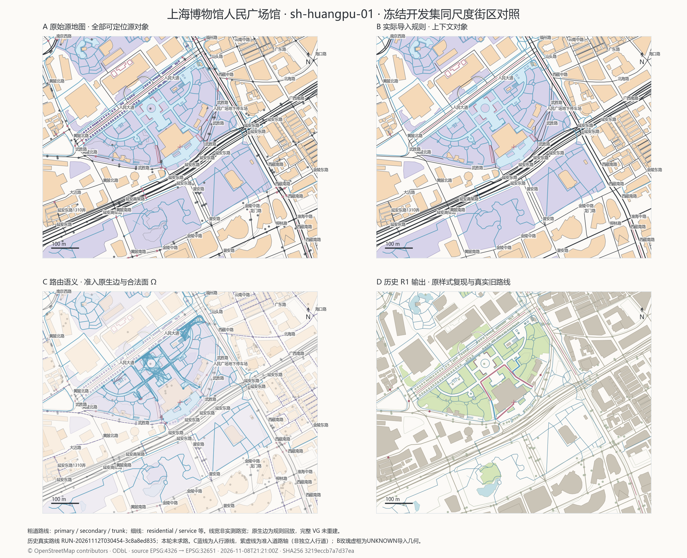
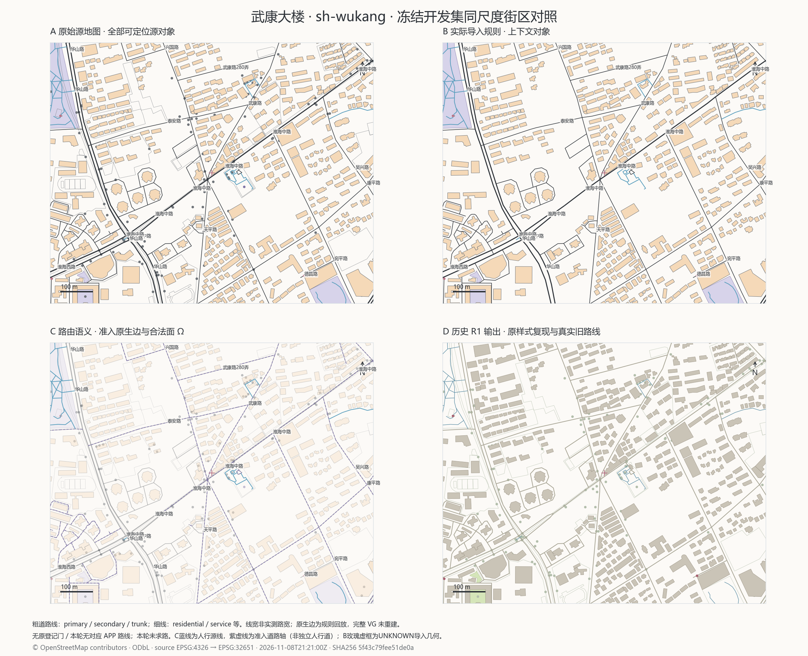
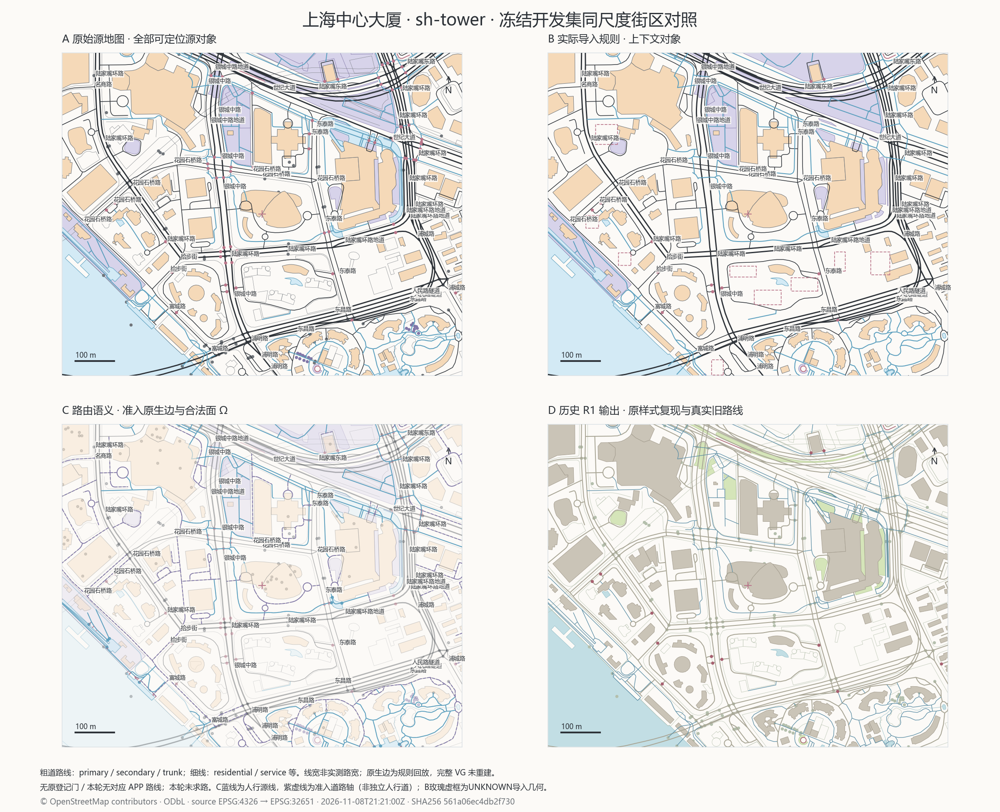
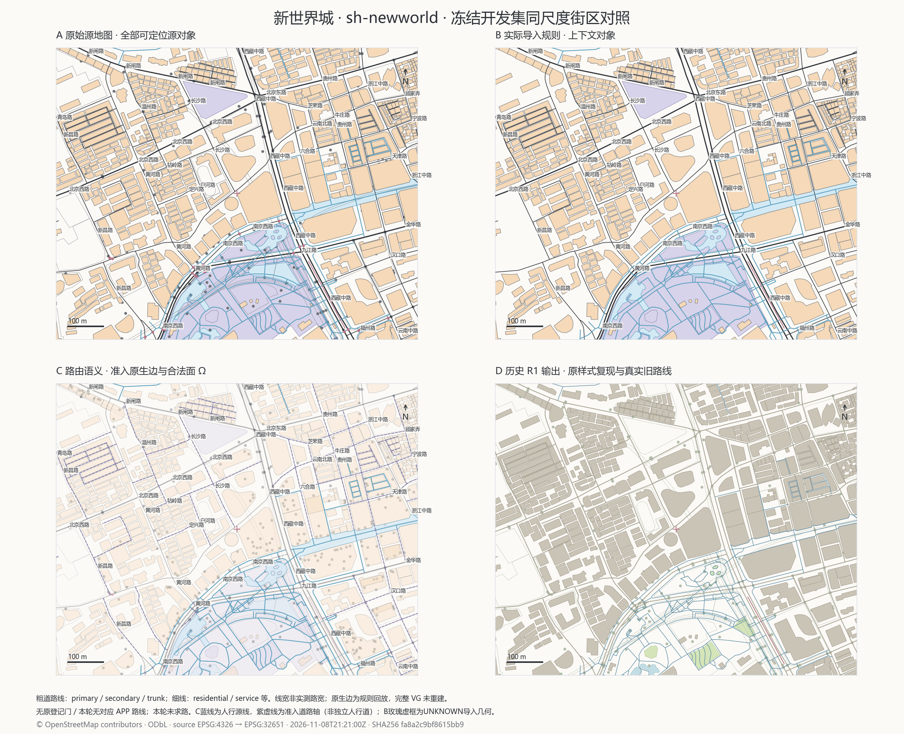
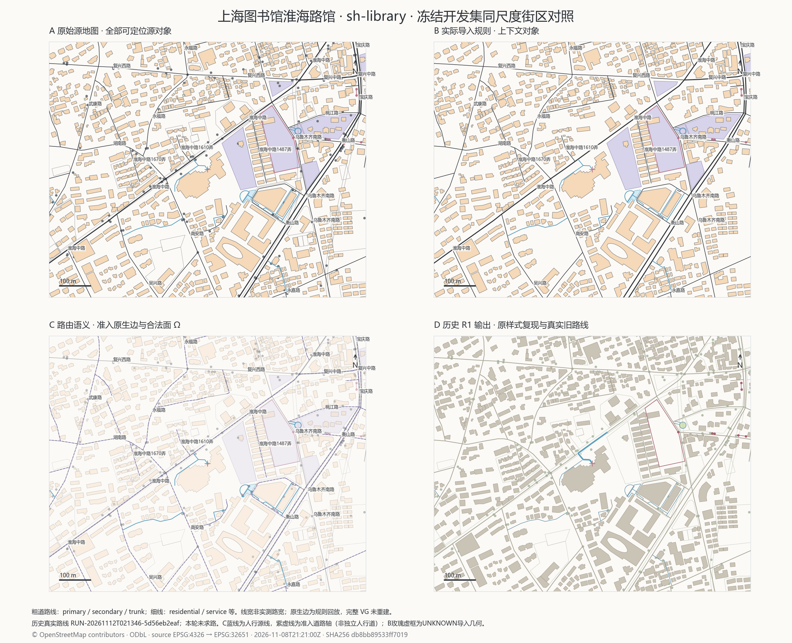
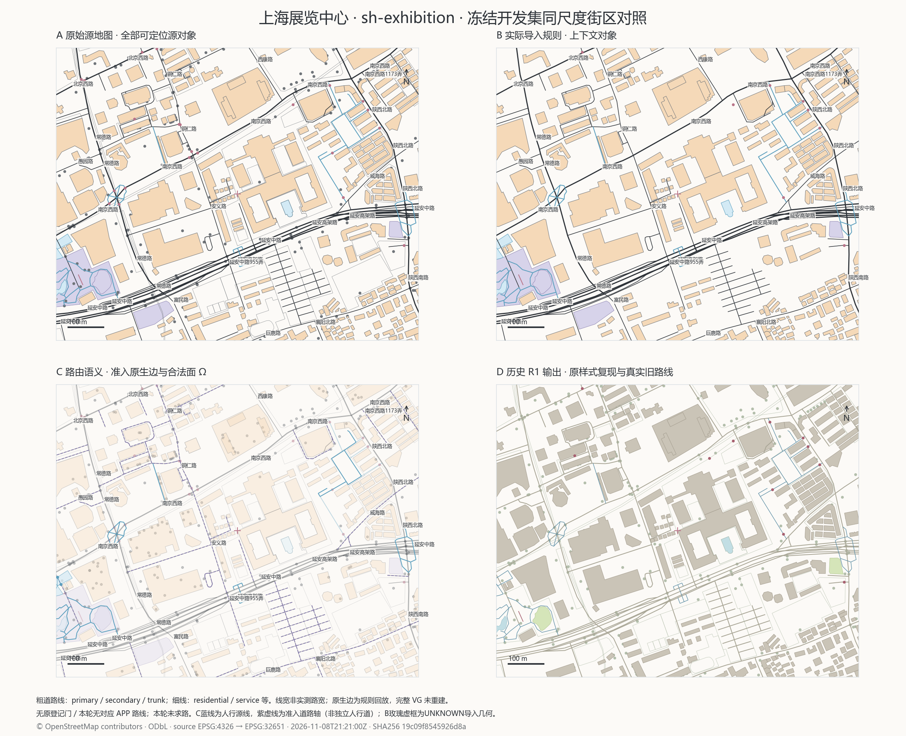

上海博物馆 · sh-huangpu-01

当前仅完成初始化基础轮，等待 G0 / G1 / G2 的 GPT 与用户审核。没有首次公开 Push，没有冻结或使用 Blind Test，也不代表整个 Parent Goal 已完成。
无需互联网瓦片：六场景交互须通过上面的本机HTTP地址读取JSON；直接打开本HTML可看以下六图，候选图册也支持直接离线打开。
个人仓库仍未Push。拟公开 38 个文件，连同 3 个本轮本地提交历史；没有导入旧仓库history。Final Commit 3134c0ea68e00871ed6dc86ca7bc905071449dae。自动化及独立扫描未发现秘密，不等于用户已经批准公开。新增源码许可证仍未代用户指定；原件、坐标、地图和私有审查包不属于清单。
| 文件 | 字节 | SHA256 |
|---|---|---|
| .gitattributes | 84 | 08fd71392ca9db66c76fbee932d61b471826bf83e8bc3c865daaeb8df356df51 |
| .gitignore | 151 | ac1ae364d5675c454074b7b401d9bd35a796abe5207d733ac5a27edc5d16466b |
| README.md | 1597 | c281ca9523ceca2045e90760372f0a6bd742d701b1b5ca54b6a24ff0c5e58ab1 |
| docs/baseline_registry.csv | 4105 | f7c3d479ec6ba82a283193b9064dd6e2e92456d313f315cef36dee29fe934a96 |
| docs/data_contract.md | 1811 | c946c416551f6df4e502b1ffbe541e253518ca79c8d0c923fd2324dfd19a3812 |
| docs/dataset_registry.md | 1221 | eb53057be5301414a1b74cdd55dba29880113003c98b3b45efadda64bef7ccfc |
| docs/governance_pointer.md | 846 | a83fd6bfb47bff98743b84f03642aa4a6de6e4073dcd740350179764ac00f33d |
| docs/methodology_registry.md | 1729 | 62ca441086070b760213d3064ae1d91bcee380c0dc394fc0c32137a944657f7a |
| docs/project_charter.md | 1230 | 20eccadb911625ef1c0d401bf1e3d77d12e4f42ec53877cb47f6713b3e03c3e1 |
| docs/project_status.md | 1039 | 9f45533bc637e75bf928d09070aeea6692b99610a04792353060a4ad6520761f |
| docs/public_release_audit.md | 1466 | 2b0d57846881f67c91aa73b03516180de55af30717aee2d14119259b35c79d05 |
| docs/research_decisions.md | 1436 | 4b1ef1b9657b1cf8cd383a2791cd4d2beb2379ac3060a9481e8154ee76aa1d05 |
| docs/research_overview.md | 1168 | 0416e8385bba7f420b2b527c4cee5e5dbcdee0977601f2ff8cde87a186ff654c |
| docs/round_delivery_protocol.md | 1333 | dc8467fa7104c8f5c2869b0b8bcbfab57425417bab6217c9d904ee2ac2d53f62 |
| requirements.txt | 125 | 04559febb540fbab83a30c589c878a89c6e12271f3d2db3b2dbbbd8f37833c2f |
| schemas/decisions.schema.json | 258 | 532f25bd50f6d002ce9804854df05edd832bbfd831295feb613589798ea9f984 |
| schemas/experiments.schema.json | 322 | 6c2126b57162c8dc8d65bf2eb541c54fd04a522a775535a7bb4ff2d548d07523 |
| schemas/scene.schema.json | 973 | 1aa628bb430f001937bd63209066c1bb23fb56126c98b08e9a8bfd6d83527dbf |
| schemas/sources.schema.json | 284 | b61196581e90bebd7ed4911b137806e38ca74088042f2162bcf0da63a1fee10f |
| src/walkability_foundation/__init__.py | 68 | a3a73f5828d4d61798ee9544b7ab7aefee756b6c3194e5b63b3b84c093ae11d6 |
| src/walkability_foundation/graph_costs.py | 838 | 8c24a590d3d2328d259dafe5c5eba4eb2dcc2725cdddd59aa8189df1ef5b6a06 |
| tests/test_graph_costs.py | 866 | 9a2a70b569500d5bf3e11283a3fa62f02c4cce1fd1cc544699275054abfcea3e |
| tests/test_release_audit.py | 1095 | 436af997643578890c062d2d1e0b568a6fd2167e05f285fd93cc857ef4d9f89a |
| tools/audit_public_tree.py | 2545 | 293008ef41ddbd17c31bd544e4f4b7f5102bbb95baac0ade1d197c3aff81cbe4 |
| tools/phase1/index.html | 4664 | 61905c624c553ffda3350532379cf29c40f27c272447b88d39e9ed1fb3c43c7c |
| tools/phase1/requirements.txt | 77 | f5ec06935e283a1d2aa5dae573e50f7683863064343e1d11b1a9fdfbff908feb |
| tools/phase1/src/build_audit.py | 23830 | 515caf50f948cd202e3242bff1988d0d893d45af78f07adc34039f00a554c8d8 |
| tools/phase1/src/export_current_graph.py | 6401 | 4f50a0af38ec57699cae4c265a3814544abe1bd9b9907e065b316973ca0d46c3 |
| tools/phase1/src/map.css | 2560 | ff4d3081044c4687aca70f4c340564d9a9df2733fad4007de6b4be199a96eb0a |
| tools/phase1/src/map.js | 15475 | 3cc0072e3242626b6413058621672b3b09b9b2bbde2cfbc694a6365cd309ec02 |
| tools/phase1/src/render_maps.py | 8025 | dff266e49a62a9256cf1703a59747023efa1b9e96b9f7746f0e412809106e37a |
| tools/phase2/src/build_atlas.py | 16319 | 6ddf39d3592efc05d9d31d2e05030902737760f1b159e97de16c49e9b8c94073 |
| tools/phase2/src/fetch_bounded.py | 3260 | 635a0de3184ade54741af4d125a4ee01674bab4712b3e0f9a49561dd30069a9a |
| tools/phase2/src/spatial_groups.py | 4704 | f40e57e12848055712b3f3f14fbc0c405ad33cf549386f4865686356a0afa50b |
| tools/phase2/src/summarize_audit.py | 3613 | 627344dc15832e0df51c926a1f0884672cefdd02f9da9b9f640f4308bcbd59bc |
| tools/phase2/src/verify_atlas.py | 1671 | e9ed3d6619289f7d7e5c53ce9ca9952411e2cfd7ebc1df08259c301d89b599c7 |
| tools/run_development_probe.py | 6008 | 058d107579c9c6b0fa47a034bdd87fe3587b58534f0388302e86c0c6e630d157 |
| tools/verify_probe_certificates.py | 2112 | 75552d0066e8aa045496534a8fd21c29f40e8e5c74e1d6671c9a4a53e7afd527 |
点图进入完整图层对照。路线为 SHA 绑定的历史实跑结果；本页面切换不调用求解器。






在现有暴露开发图上实际运行8个固定请求，只比较标量与批处理的平行选项成本构建。F0/F1区域、图、端点与有限代价未变；最小代价复现历史结果。批处理未稳定加速，因此不作为新方法选留。该结果不证明泛化或现场公众通行。
下面是新测 SHA 与实际 CRC/历史回执对照，不重建旧成果。NOT_FOUND 保持缺失；内部 PASS 不冒称用户验收。
| 历史成果 | 本机核验 | 当前角色 | SHA256 |
|---|---|---|---|
| NAV_END_V1 | HASH_MATCHES_HISTORICAL_RECEIPT_CRC_PASS | HISTORICAL_SCREENSHOT_REFERENCE | e357e32c8431588dd3c50b80c4546774ea9637ed99c72a3b9c1e29b5565328e9 |
| NAV_END_V2 | HASH_MATCHES_HISTORICAL_RECEIPT_CRC_PASS | HISTORICAL_SCREENSHOT_REFERENCE | 86113eb8a514806f2042dce0833931726003b8cd3c5ff526892a43b2e7b83652 |
| PILOT_R1_AB | HASH_MATCHES_HISTORICAL_RECEIPT_CRC_PASS | HISTORICAL_DUAL_PATH | a4b902b530163477bdfd1092d7a88441c11e76950ee394cfb440213eb4453c12 |
| PILOT_R2 | HASH_MATCHES_HISTORICAL_RECEIPT_CRC_PASS | HISTORICAL_DIAGNOSIS | 50e147fba6cec20db02bf2aed8a00c679ad1d8ca2ca5f45c2a5a0db1c89518a2 |
| PILOT_R3 | HASH_MATCHES_HISTORICAL_RECEIPT_CRC_PASS | DEVELOPMENT_SOURCE_SIX_SCENES | 13ffb6be75ca0b26710dd3d68bba2951e99539fa06eb51ab4d8195ea487e8c30 |
| R4_REV1 | HASH_MATCHES_HISTORICAL_RECEIPT_CRC_PASS | HISTORICAL_FACE_METHOD | f2de5326ffbffe1e62c0fa5d622cec6645582342824ea1ae13716789d5af5ee0 |
| NORTH_ACCESS_R1 | HASH_MATCHES_HISTORICAL_RECEIPT_CRC_PASS | HISTORICAL_EXIT_HYPOTHESIS | ac829ec6bbb0d8b35f50fba4b424bbca264cbec873a7fa985da71d722d781147 |
| WALKABILITY_R1 | NOT_FOUND | NOT_FOUND_NO_RECONSTRUCTION | |
| WALKABILITY_R2 | HASH_MATCHES_HISTORICAL_RECEIPT_CRC_PASS | HISTORICAL_LINE_INFERENCE | 277f1cfac82ec04335262444dcfc3ef1080c2c93d8e481dd8dac42db65ecbf72 |
| WALKABILITY_R3 | HASH_MATCHES_HISTORICAL_RECEIPT_CRC_PASS | HISTORICAL_REGION_RECOVERY | d623af231c6eabeace1d3c8e284787a51b7d83782c6c8f7990d16b27f5c0cd0e |
| WALKABILITY_R4_CONTEXT | HASH_MATCHES_HISTORICAL_RECEIPT_CRC_PASS | HISTORICAL_CONTEXT_DIAGNOSIS | 40f8e18d76d04819d66a3bd526ecb2b74fc83201b3b58452881a6576b6651cbf |
| FREE_SPACE_R1_FINAL | HASH_MATCHES_HISTORICAL_RECEIPT_CRC_PASS | CURRENT_FREE_SPACE_DEFINITION | 1d4110a76d0e5006f5c518366d82d6fb1aa98c8e46bac6956b2b0dbd91ccc77a |
| KNOWN_ENTRANCE_E2E_R1_FIXED | HASH_MATCHES_HISTORICAL_RECEIPT_CRC_PASS | CURRENT_KNOWN_DOOR_PROTOTYPE | 4fc46d467a25aa19db46a8d721f523b1f3a5aed43ae7645d107a52a08682e6da |
| PED_AREA_SHORTEST_R1_FIXED | HASH_MATCHES_HISTORICAL_RECEIPT_CRC_PASS | CURRENT_FULL_FACE_BASELINE | c5472838de6320d983d80e4defd448e08c017777f23bc7aa083d38e7ce10b08a |
| PED_AREA_CONNECTIVITY_R1 | HASH_MATCHES_HISTORICAL_RECEIPT_CRC_PASS | CURRENT_SOURCE_TOPOLOGY_BASELINE | d5934ae928e656f7bdc5618b63e2293403ce0b736809d2050fc2f41caac393ed |
| PED_AREA_CONNECTIVITY_R2 | HASH_MATCHES_HISTORICAL_RECEIPT_CRC_PASS | LATEST_ROUTE_DIAGNOSIS | 3988e9fba95da70dc03b8191a177740a3ccd13602019afe3765e566648b55711 |
中文审查说明 · 首次公开精确文件清单 · 安全扫描 · 固定本地审查 ZIP · 最终状态及 Commit/ZIP SHA 绑定
只读本机服务端口53501；前台运行 scripts/serve_review.py，Ctrl+C停止。已运行后台实例先核对 /api/health 身份和PID再停该实例。不要停止旧53421/53431/53441/53451。页面的地图数据不属于首次Public推送清单。生成时间 2026-11-12T16:19:18.248547+08:00